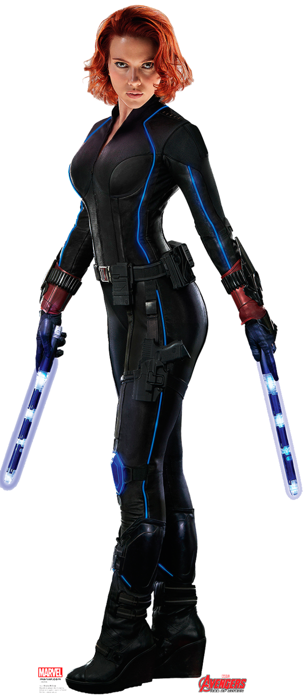
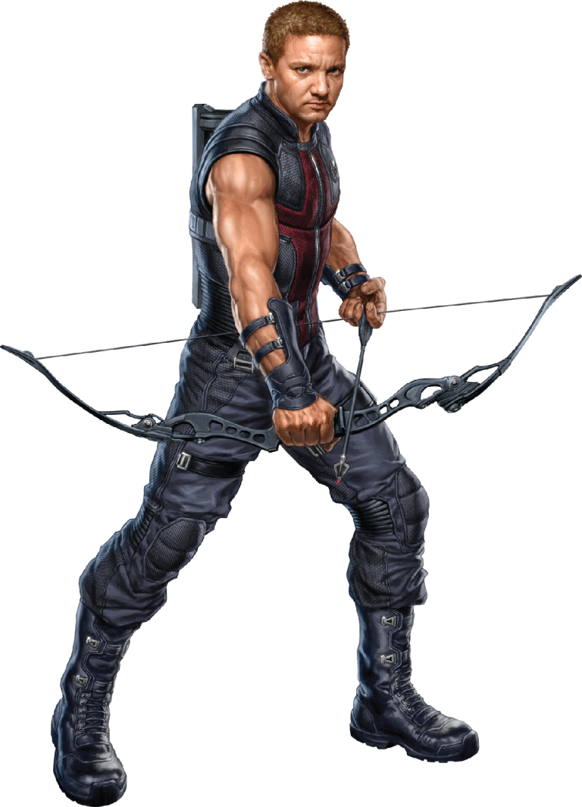

The Avengers
Sinopse
Loki, o irmão de Thor, ganha acesso ao poder ilimitado do cubo cósmico ao roubá-lo de dentro das instalações da S.H.I.E.L.D. Nick Fury, o diretor desta agência internacional que mantém a paz, logo reúne os únicos super-heróis que serão capazes de defender a Terra de ameaças sem precedentes. Homem de Ferro, Capitão América, Hulk, Thor, Viúva Negra e Gavião Arqueiro formam o time dos sonhos de Fury, mas eles precisam aprender a colocar os egos de lado e agir como um grupo em prol da humanidade.
Informações básicas
Ano: 2012
Gênero: Ação
Duração: 143 minutos
Personagens principais
| Personagem | Ator/Atriz | Descrição | Imagem |
|---|---|---|---|
| Homem de Ferro | Robert Downey Jr. | Anthony Edward Stark, mais conhecido como Tony Stark, é um personagem fictício e a verdadeira identidade do Homem de Ferro (Iron Man) — interpretado por Robert Downey Jr. Filho de Howard Stark e Maria Stark, ele é um prodígio desde a infância. Ou, como o próprio afirma: “um gênio, bilionário, playboy e filantropo”. |

|
| Voltar à lista | |||
| Capitão America | Chris Evann | Um dos melhores lutadores do mundo, Rogers conhece inúmeras técnicas de combate corpo-a-corpo, mesmo se não tem superpoderes. Porém, graças ao soro do Supersoldado, é dono de força, agilidade, resistência, reflexos e capacidade de cura superiores aos dos seres humanos normais. |

|
| Voltar à lista | |||
| Thor | Chris Hemsworth | Assim como todo asgardiano, Thor possui grande força e resistência. Porém, o que o diferencia como filho de Odin é sua habilidade de controlar forças da natureza, principalmente raios e trovões. O próprio personagem acreditava que seu controle sobre esses elementos se devia ao seu martelo Mjolnir. |

|
| Voltar à lista | |||
| Hulk | Mark Ruffalo | Hulk é o alter ego de Robert Bruce Banner, um cientista com transtorno dissociativo de identidade, que após ser irradiado por raios gama fez emergir uma personalidade alternativa altamente raivosa, que se manifesta transformando Banner em um homem verde e musculoso com força e resistência sobre-humanas. |

|
| Voltar à lista | |||
| Viúva Negra | Scarlett Johansson | E, além da precisão exemplar, armas e conhecimento de combate que faz de Natasha uma das lutadoras mais mortais do Universo Marvel, ela também possui uma série de habilidades que nenhum ser humano poderia aprender simultaneamente. |  |
| Voltar à lista | |||
| Gavião Arqueiro | Jeremy Renner | Como um dos melhores agentes de S.H.I.E.L.D., o Gavião Arqueiro é um dos maiores atiradores e usa armas tradicionais e de alta tecnologia, mas é reconhecido por sua grande habilidade em arco e flecha. |  |